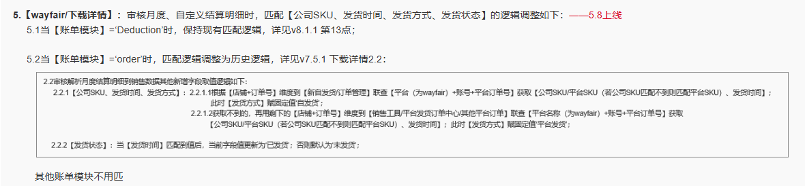
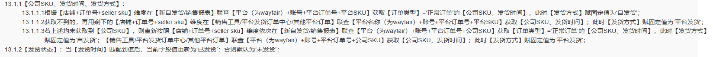

【平台财务报表/wayfair/下载详情】：审核月度、自定义结算明细逻辑及公司SKU定时任务调整：去掉匹平台SKU到公司SKU的逻辑，改为获取平台SKU至seller sku列，即获取公司SKU到公司SKU列，获取不到的获取平台SKU到seller sku列

20260302调整：
1、【wayfair/销售数据】：新增【SellSku】位于【公司SKU】左侧；
----取值逻辑：1.1审核月度、自定义结算明细时若【seller sku】有值，则取【seller sku】；否则为空；
1.2审核月度、自定义结算明细及对应公司SKU定时任务调整：不区分账单模块为decuction和order的逻辑，合并，调整如下：
①先按【店铺+订单号+seller sku】维度获取公司SKU、发货时间、发货方式：

2、【财务平台收入新版/明细报表】：【拉取按钮】：拉取wayfair月度结算明细时，SKU取值逻辑调整为取数据源【SellSku】；（检查下wayfair有没有其他取销售数据seller sku的逻辑）
②将①剩余按维度未匹到的数据，按【店铺+订单号】维度,获取平台SKU、公司SKU分别到SellSku（若【seller sku】=【SellSku】，则不取平台SKU）和公司SKU；--公司SKU的定时任务不用更新sellsku
2.2.1【公司SKU、发货时间、发货方式】：2.2.1.1根据【店铺+订单号】维度到【新自发货/订单管理】联查【平台（为wayfair）+账号+平台订单号】获取【平台SKU、公司SKU、发货时间】分别到【SellSku、公司SKU、发货时间】；
此时【发货方式】赋固定值‘自发货’；
2.2.1.2获取不到的，再用剩下的【店铺+订单号】维度到【销售工具/平台发货订单中心/其他平台订单】联查【平台名称（为wayfair）+账号+平台订单号】获取
【平台SKU、公司SKU、发货时间】分别到【SellSku、公司SKU、发货时间】；此时【发货方式】赋固定值‘平台发货’；
2.2.2【发货状态】：当【发货时间】匹配到值后，当前字段值更新为‘已发货’；否则默认为‘未发货’；